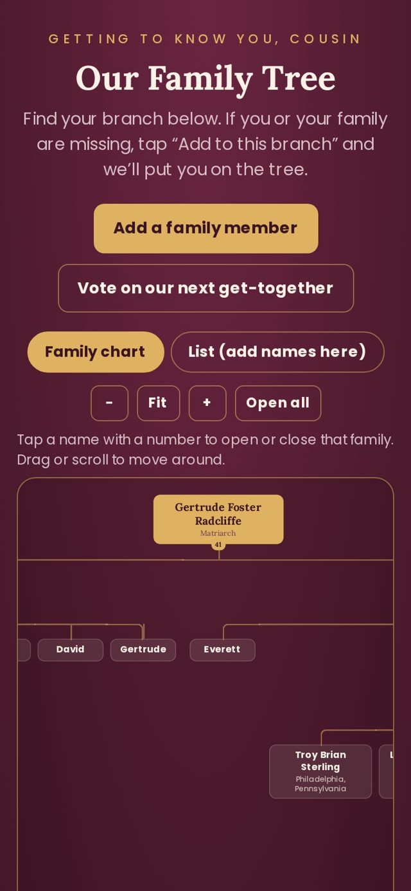
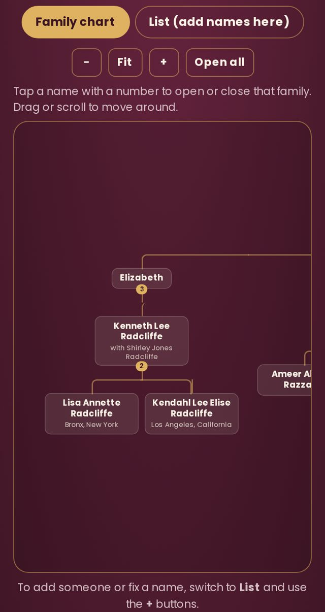
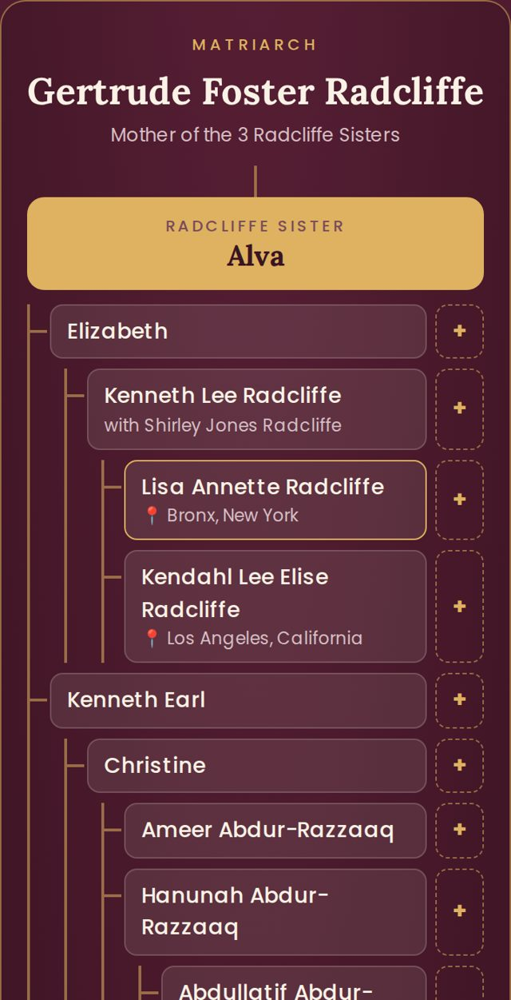
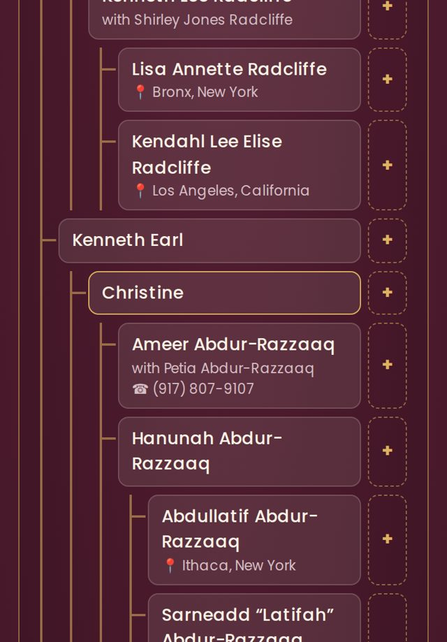
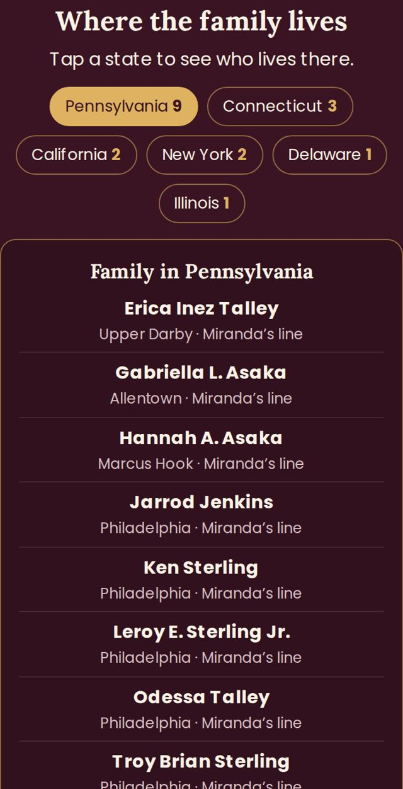
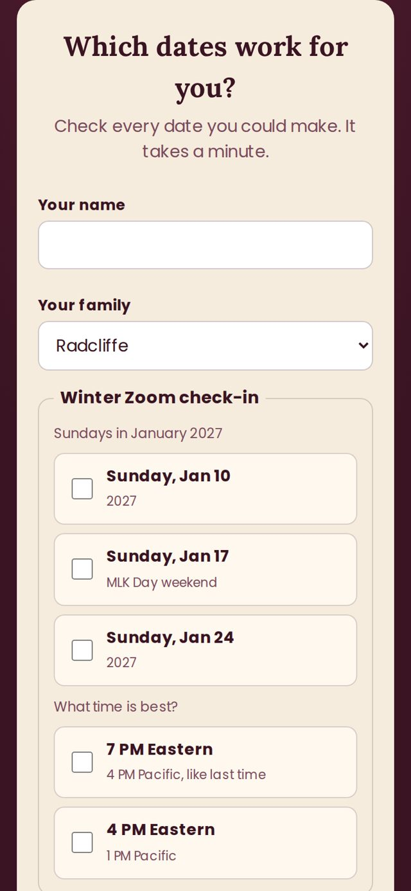
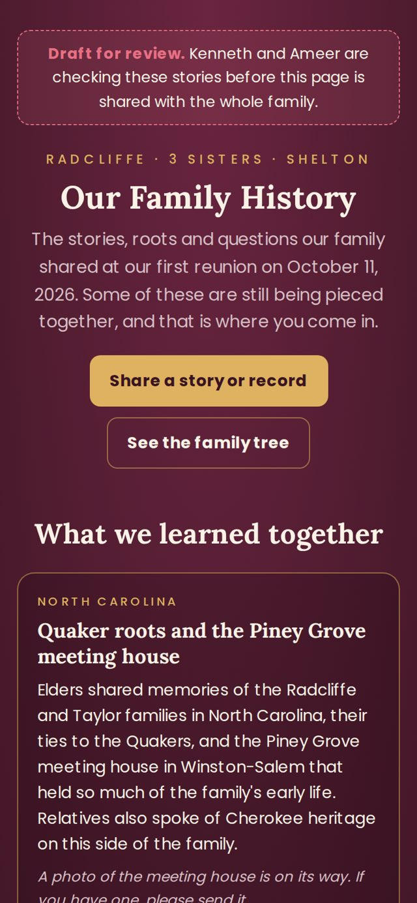

Radcliffe · 3 Sisters · Shelton
A quick tour from Cousin Ameer on finding your way around.
Open the family tree. At the top are two buttons: Family chart shows the tree branching down like a real family tree, and List shows everyone in one long scroll.
The chart starts with Gertrude Foster Radcliffe and her three daughters, Alva, Beatrice and Miranda. Keep scrolling down the page and you'll find who came to the reunion and where the family lives.

A name with a small gold number under it has children. The number is how many people are in that branch. Tap the name to open it, and tap again to close it.
Tap Open all to open every branch at once. Use + and − to zoom, Fit to see the whole tree on your screen, and drag with your finger to move around.

Tap List to see every person in order, family by family, with where they live. On a phone this is the easiest way to read through everyone.

If a relative chose to share their number, it shows right under their name with a phone symbol, in the chart, in the list, and in Where the family lives. On a phone, tap the number to call.
No number under someone's name means they kept it private. Ask Cousin Ameer and he can help you get in touch.

Scroll down to Where the family lives. Each bubble is a state with the number of relatives there. Tap one to see who lives there and which line they come from. Tap it again to close it.

Go to List. To fix a name, add a last name, or share your phone number, tap your name. To add a son or daughter, tap the + next to the parent's name. Either one takes you to a short form with the person already filled in.
Tap the tree link in the email. New people are added right into their own family's branch, under their parents.
To spot them, tap Open all in the chart, or switch to List. Looking for one name? In the List, use your phone's search: on an iPhone tap the share button and choose Find on Page; on Android tap the three dots in Chrome and choose Find in page. Then type the name.
On the tree page, tap Vote on our next get-together near the top. Check every date that works for you and press send.
Scroll to the bottom of that page to see Votes so far. The date in the lead gets a star.

The stories we shared on the call, from Piney Grove in North Carolina to our roots in Sierra Leone, Angola and Cameroon. There's a spot at the bottom to send your own story or an old photo.
